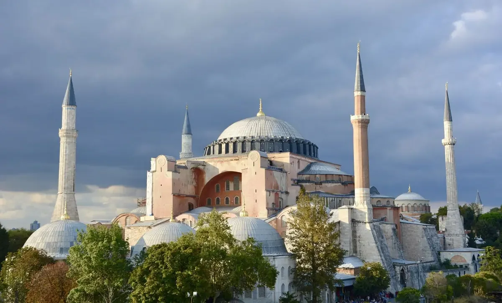

아직 펼치지 않은 카드빛과 돌로 지은 집 · 2아야 소피아교회였다가, 이슬람 사원이었다가, 박물관이 된 건물이 있다면?아주아주 큰 둥근 지붕이야. 얼마나 클까?
537년 ~ 오늘이스탄불 · 튀르키예
아야 소피아
537년, 콘스탄티노폴리스(오늘의 이스탄불)에 하늘에 매단 듯한 둥근 지붕의 교회가 봉헌되었어요. 봉헌은 기도와 예식으로 건물을 거룩한 곳으로 구별해 바치는 일이에요. ‘아야 소피아’는 ‘거룩한 지혜’라는 뜻이에요. 그 뒤 이슬람 사원, 박물관, 다시 이슬람 사원이 되며 1,500년 가까이 같은 자리를 지켰어요. 1852년의 그림과 오늘의 사진을 겹쳐, 같은 자리에서 무엇이 남고 무엇이 바뀌었는지 찾아보세요.
아주아주 큰 둥근 지붕이 있는 건물이야. 옛날 그림이랑 오늘 사진을 겹쳐 보면서 무엇이 그대로인지 찾아볼까?
검수 전 시안이에요(기준서 1판). 장면에는 기록에 있는 것만 옮겼고, 기록마다 다른 것은 따로 적었어요. 상상은 ‘눈 감고 상상해 보기’에만 썼어요.
시안 확인용카드 단계 미리 보기
1
하늘에 매단 둥근 지붕
537년, 유스티니아누스 황제가 새 교회를 봉헌했어요. 설계는 수학과 기하학에 밝은 안테미오스와 이시도로스가 맡았어요(스마트히스토리).
이 교회를 직접 본 역사가 프로코피우스는 둥근 지붕을 이렇게 적었어요.

“단단한 돌 위에 놓인 것이 아니라, 하늘에 매단 금빛 지붕이 공간을 덮고 있는 것 같다.”
프로코피우스, 『건축에 대하여』 1권(550년대) · 이 안내서가 옮김
지붕 밑동을 창 40개가 촘촘히 둘러요. 금빛 면에 부딪힌 빛이 창 둘레로 튀어, 창 사이의 벽을 갉아먹은 듯 가늘어 보이게 해요. 그래서 지붕이 떠 있는 것처럼 보여요(스마트히스토리). 프로코피우스는 안에 들어서면 햇빛이 밖에서 드는 게 아니라 안에서 빛이 생겨나는 것 같다고도 적었어요. 이곳에서 기도하는 사람은 마음이 하나님께로 들려, 그분이 멀리 계시지 않다고 느낀다고도 했어요.
처음 지붕은 지진으로 일부가 무너졌어요. 다시 지을 때는 처음보다 더 높게 올렸어요(스마트히스토리). 사진 네 귀퉁이에는 날개가 여럿인 천사들이 있어요. 왼쪽 위 천사만 얼굴이 보이고, 나머지 천사들은 얼굴 자리에 금빛 별이 붙어 있어요.
고개를 들면 아주 큰 둥근 지붕이야. 아래에 창문이 빙 둘러 있어!
물어보기창문이 몇 개쯤 될까? 함께 세어 볼까?
2
같은 자리, 170년
1847년, 술탄 압뒬메지트가 포사티 형제에게 이 건물을 고치게 했어요. 수리는 2년 동안 이어졌고, 1849년 7월 13일 건물은 성대하게 다시 문을 열었어요(그리스 여행기 기록 보관소).
형제는 1852년 런던에서 그 모습을 석판화(돌판에 그린 그림에 잉크를 묻혀 종이에 찍어 낸 판화) 책으로 펴냈어요. 왼쪽은 그 책의 그림, 오른쪽은 2024년에 같은 쪽을 찍은 사진이에요. 두 장 사이는 170년이 넘어요. 가운데 손잡이를 밀어 겹쳐 보세요.
가운데 손잡이를 밀어 1852년 그림과 2024년 사진을 겹쳐 보세요.


왼쪽 · 포사티 형제의 석판화 「동쪽을 바라본 큰 마당」, 1852년(1847~1849년 수리 뒤의 모습) · 그림: 가스파레 포사티 · 석판: 루이 하그 · 퍼블릭 도메인 · 위키미디어 공용(미국 의회 도서관) · 석판화 부분만 잘라 씀
오른쪽 · 2층 회랑에서 동쪽 끝을 바라본 모습, 2024년 · 사진: Julian Lupyan · 퍼블릭 도메인 · 위키미디어 공용
둥근 지붕과 반원 지붕들, 양쪽 벽의 둥근 글씨판이 같은 자리에 있어요. 그림은 1층 바닥에서, 사진은 2층 회랑(넓은 바닥을 둘러싼 위층 복도)에서 봐서 높이가 조금 달라요. 오늘 사진에서는 동쪽 반원 지붕 가운데를 흰 천이 가리고 있어요.
그림은 1층 바닥에서, 사진은 2층 회랑에서 동쪽 끝을 바라봤어요. 그래서 보는 높이가 조금 달라요.
양쪽 벽의 커다란 둥근 글씨판은 그때도 지금도 같은 자리에 있어요. 동쪽 끝 반원 지붕 가운데를 보세요. 그림에서는 그 자리가 금빛 무늬뿐이고, 사진에서는 흰 천이 드리워 있어요. 그 천 뒤에 성모와 아기 예수 모자이크가 있어요.
1849년 7월 13일, 2년 만에 다시 문을 연 날 이곳에 들어섰다면 무엇이 가장 먼저 눈에 들어왔을까요?
옛날 그림이랑 오늘 사진을 겹쳐 볼까? 둥근 글씨판이 그대로야!
물어보기옛날 그림과 오늘 사진, 무엇이 같고 무엇이 달라?
3
회반죽 아래의 얼굴들
이슬람 사원이 된 뒤, 사람 모습을 담은 모자이크는 차츰 회반죽과 그림 무늬 아래로 사라졌어요(알베르티스 윈도). 포사티 형제는 수리하다 드러난 모자이크를 먼저 보존한 뒤, 새 회반죽으로 덮고 그 위에 무늬를 그렸어요. 술탄은 두 점을 보이게 두려 했지만 신하들이 말렸다고 해요(비잔틴 문화 박물관).
1931년 6월 7일, 미국 학자 토머스 휘트모어가 모자이크를 다시 드러내도 좋다는 허락을 받았어요. 1934년 건물이 박물관으로 바뀐 뒤, 회반죽을 걷어 내는 일은 18년 동안 이어졌어요(덤바턴 오크스).

그렇게 다시 찾은 모자이크 가운데 하나가 남쪽 2층 회랑의 「데이시스」예요. 데이시스는 ‘간청’이라는 뜻이에요(스마트히스토리). 가운데 예수, 왼쪽 예수의 어머니 마리아, 오른쪽 세례 요한이 서 있어요(서섹스 대학 비잔틴 모자이크 자료·팔라스웹). 세례 요한은 예수보다 앞서 와서 길을 닦고, 예수에게 세례를 준 사람이에요(마가복음 1장).
아랫부분은 떨어져 나가 회색 벽만 남았어요. 그래도 세 사람의 얼굴은 또렷이 남았어요.
회반죽 아래 숨어 있던 얼굴이야. 오랜 시간이 지나 다시 찾았대.
물어보기가운데 사람은 손으로 무엇을 하고 있어?
4
덮고 걷기를 되풀이한 얼굴
둥근 지붕 아래 천사들의 얼굴도 가려져 있었어요. 포사티 형제가 가린 천사 얼굴 하나가 2009년, 160년 만에 다시 드러났어요(알베르티스 윈도). 가로세로 1.5미터, 1미터쯤 되는 모자이크예요(더 내셔널). 첫 장면의 2012년 사진에서 얼굴이 보이는 왼쪽 위 천사가 그 천사예요.
2020년 7월, 이 건물은 다시 이슬람 사원이 되었어요. 튀르키예 대통령실 대변인은 무슬림이 기도할 때 바라보는 쪽(키블라)에 있는 성모 마리아와 천사 가브리엘 모자이크를 기도 시간에 천으로 가리고, 기도 시간이 아닐 때는 걷어 둔다고 밝혔어요(아트 뉴스페이퍼).

사진 속 흰 천이 바로 그 천이에요. 동쪽 끝 반원 지붕, 아기 예수를 안은 성모 모자이크 앞에 드리워 있어요.
흰 천에서 눈을 들어 위를 보면, 첫 장면의 그 둥근 지붕이에요. 프로코피우스가 하늘에 매단 것 같다고 적은 바로 그 자리에, 둥근 지붕은 쓰임이 세 번 바뀌는 동안에도 걸려 있었어요.
흰 천이 커튼처럼 걸려 있어. 그 뒤에 아기 예수와 엄마 마리아 그림이 있대.
물어보기커튼을 쳤다가 걷었다가 하는 곳, 우리 집에도 있어?
눈 감고 상상해 보기
둥근 지붕 아래 넓은 바닥에 서 있어요. 지붕 밑 창으로 든 빛이 금빛 면에 부딪혀 흩어져요. 낮은 등불들이 머리 위에 떠 있어요. 고개를 들면, 지붕이 정말 하늘에 매달린 것 같아요.
눈을 감아 봐. 아주 큰 둥근 지붕 아래야. 지붕이 둥둥 떠 있는 것 같아!
나의 자리
시간이 흐르며 내 삶의 쓰임도 바뀌어 왔나요? 그래도 변하지 않은 나의 중심은 무엇인가요?
아주 큰 둥근 지붕 아래에서 노래하면 어떤 소리가 날까?
마음에 닿는 한 줄을 고르거나 직접 써 보세요. 한 줄을 남기면 이 자리의 도장이 찍혀요. 이 기기에만 저장돼요.
더 깊이
이야기를 보다 궁금해질 만한 것들이에요. 답을 읽거나 짧은 영화로 보세요.
이슬람 사원에서는 왜 사람 모습 모자이크를 가렸어요?
프로코피우스가 본 그 지붕이, 오늘의 지붕이에요?
뒷이야기
아직 펼치지 않은 이야기예요. 누르면 이야기가 펼쳐지고 색이 돌아와요. 더 알고 싶으면 근거를 따라가 보세요.
다 펼치면, 다음에 오실 때 새 이야기가 찾아와요.
오늘의 뒷이야기는 여기까지예요. 다음에 오시면 새 이야기가 기다리고 있어요.
펼친 뒷이야기 · 누르면 다시 볼 수 있어요
더 찾아보기
기록마다 다른 점
데이시스를 만든 때. 서섹스 대학의 비잔틴 모자이크 자료는 ‘1261년?’(13세기)으로 적고, 팔라스웹은 12세기 말로 적어요.
포사티 형제는 어디 사람? 휘리예트 데일리 뉴스는 ‘이탈리아 형제’라고 적어요. 비잔틴 문화 박물관은 ‘이탈리아 말을 쓰는 스위스 지역’에서 났다고 하고, 그리스 여행기 기록 보관소는 형제가 1858년 스위스로 돌아갔다고 적어요.
직접 가 보기
확인한 날 · 2026년 11월 18일 · 바뀌기 쉬운 정보라 정기적으로 다시 확인해요
오늘 관광객은 2층 회랑 관람 길로 들어가요. 데이시스 모자이크는 남쪽 2층 회랑에 있어요. 바닥은 기도하는 곳이라 관람 길에 들어가지 않아요.
같은 자리, 170년 금박
1852년 그림과 2024년 사진을 끝까지 겹쳐 보면 카드에 금박이 입혀져요.
손잡이를 양쪽 끝까지 밀어 1852년과 2024년 겹쳐 보기
다시 문을 연 날 채색
둘 가운데 하나만 해도 카드가 채색돼요.
1849년 다시 문을 연 날, 가장 먼저 눈에 들어왔을 것 고르기
아이와 함께 ‘영화처럼 보기’를 끝까지 보기
근거 보기 (29)
- 프로코피우스 『건축에 대하여』 1권(로브 1940 번역, 퍼블릭 도메인) — 안테미오스와 이시도로스, 햇빛이 안에서 생겨나는 듯, 하늘에 매단 금빛 지붕, 일부러 낸 창, 마음이 하나님께 들림, 21~22절 반란 무리가 교회를 불태움 · 새 교회가 아름다워 그리스도인들이 옛 교회가 불타기를 바랐을 것
- 스마트히스토리: 아야 소피아 — 532~537년, 수학과 기하학에 밝은 두 건축가, 지붕 밑 창이 촘촘해 떠 보임, 지진으로 일부 무너져 더 높게 다시 지음, 1934년 박물관, 창 40개(저커), 금에 부딪힌 빛이 창 둘레로 튀며 벽을 갉아먹는 듯, 도시를 차지한 뒤 가장 먼저 한 일 가운데 하나가 사원으로 바꾼 것(저커), 거룩한 지혜의 교회, 지붕의 이슬람 글귀
- 그리스 여행기 기록 보관소(아이카테리니 라스카리디스 재단): 포사티 석판화집 — 1847년 술탄 압뒬메지트, 2년 공사, 1849년 7월 13일 다시 엶, 1852년 런던, 1858년 스위스로, 스위스의 건축가 집안, 가스파레는 상트페테르부르크 황제 궁정의 건축가 · 이스탄불의 러시아 대사관, 수백 년 손보지 않은 건물, 미흐라브와 민바르를 손봄, 석판에 루이 하그의 이름
- 비잔틴 문화 박물관(테살로니키) 전시 안내 「포사티 형제의 아야 소피아」 — 이탈리아 말을 쓰는 스위스 지역 출신, 모자이크 보존 뒤 새 회반죽에 무늬, 술탄은 두 점을 남기려 했으나 신하들이 막음, 1847~1849년, 1832년 러시아로 간 가스파레, 니콜라이 1세가 맡긴 러시아 외교 공관, 가스파레의 연필 그림이 1852년 석판화집으로
- 휘리예트 데일리 뉴스 2010년 12월 6일(재게시) — 둥근 글씨판은 포사티 수리 때 걸림, 지름 약 8m, 서예가 카자스케르 이제트 에펜디, 800명 일꾼, 지붕 둘레 쇠사슬, 술탄의 부탁으로 몇몇 모자이크를 드러내 손봄 · 술탄은 감탄했으나 다시 덮게 함, 나무와 가죽의 판 여덟 개 · 알라와 무함마드 · 네 칼리프 · 하산과 후세인, 벽을 다치지 않고는 뗄 수 없다고 함
- 알베르티스 윈도(미술사학자 모니카 보언) — 모자이크는 차츰 회반죽과 그림으로 덮임, 1847~1849년 회반죽으로 덮음, 천사는 1344년 지진 뒤 14세기 중반, 포사티가 가린 얼굴이 2009년 드러남, 다시 덮기 전에 많은 모자이크의 자리와 모습을 적어 둠
- 더 내셔널: 아야 소피아 모자이크 — 천사 모자이크 하나가 160년 만에 회반죽과 금속 가면 뒤에서 드러남, 1.5m×1m, 포사티가 마지막으로 봄, 날개가 여섯인 세라핌, 1609년 술탄 아흐메트 때 얼굴을 별로 덮음, 포사티가 드러내 공책에 옮겨 그렸으나 다시 가려짐, 놀랄 만큼 잘 남음, 앱스의 성모는 등받이 없는 의자에 아기 예수를 무릎에
- 덤바턴 오크스: 블리스–타일러 편지 주석 — 1931년 6월 7일 휘트모어 허락, 1934년 세속화 뒤 18년 동안 더 드러냄, 1935년 박물관, 아타튀르크에게서 허락, 그해 사람 모습 모자이크 열여섯 점의 조각, 1934년 8월 24일 박물관으로 바꾸라는 명령
- 서섹스 대학 비잔틴 문화사 센터 모자이크 자료 — 아야 소피아 남쪽 회랑 데이시스, 1261년?
- 팔라스웹(밥 애치슨): 남쪽 회랑의 데이시스 — 예수·성모·세례 요한, 12세기 말로 봄, 1930년대 후반 휘트모어가 드러냄, 1204~1261년 라틴 성직자들이 맡음
- 아트 뉴스페이퍼 2020년 7월 20일 — 무슬림이 기도할 때 바라보는 쪽(키블라)에 있는 성모와 대천사 가브리엘 모자이크를 기도 시간에 천으로 가림, 기도 밖에는 엶, 앱스 성모와 아기 예수 아래에 미흐라브
- 던(로이터) 2020년 7월 24일 — 86년 만의 첫 금요 기도, 흰 천이 기도하는 사람들을 마주했을 마리아와 예수 그림을 가림, 최고 법원 한 곳이 박물관 지위를 없앰, 대통령이 곧바로 사원으로 정함
- 브리태니커: Hagia Sophia — 거룩한 지혜의 교회, 532년 1월 니카 반란 때 다시 불탐, 558년 지진으로 지붕 일부가 무너짐(562년 고침), 1204년 제4차 십자군 때 약탈, 1453년 메흐메트 2세가 사원으로(나무 미나레트 · 메카 쪽을 알리는 미흐라브 · 설교단 민바르), 붉은 미나레트 · 흰 미나레트 · 서쪽의 두 미나레트(시난), 1934년 대통령 아타튀르크가 세속화, 1935년 박물관, 2020년 다시 사원
- 메트로폴리탄 미술관 하일브룬 미술사 연표: Hagia Sophia, 532–37(에마 웨그너, 2004) — 404년 · 532년에 무너지고 불탄 앞선 교회, 537년 12월 27일 봉헌, 처음 지붕 꼭대기 둥근 판의 큰 십자가, 558년 무너지고 562년 더 높이, 1453년 메흐메트 2세가 사원으로, 미나레트 · 회칠 · 버팀벽, 1934년 박물관
- 메트로폴리탄 미술관: Figural Representation in Islamic Art(2001) — 종교 미술과 건축에서 사람 모습을 꺼림, 생명 있는 것을 짓는 일은 신만의 일
- 컬럼비아 대학 중세 건축 자료(시릴 망고 『비잔틴 제국의 미술 312–1453: 사료』의 번역): 첫 지붕의 무너짐 — 테오파네스(558년 5월 7일, 지진으로 금 간 지붕을 고치던 중 동쪽 부분이 무너짐), 말랄라스(30피트 높게, 562년 다시 봉헌), 아가티아스(더 좁고 가팔라 덜 놀랍지만 훨씬 단단)
- 스마트히스토리 비잔틴 미술 안내(에반 프리먼): 아야 소피아의 데이시스 — ‘간청’, 하늘 궁정의 신하처럼 자비를 구함, 축복하는 오른손과 복음서, IC XC · MP ΘY · 앞서 온 이 요한, 1204년 십자군과 라틴 교회, 1261년 되찾음과 9월 새 총대주교, 옥좌와 아래 절반이 사라짐
- 스마트히스토리(에반 프리먼, 2021): 아야 소피아의 중기 비잔틴 모자이크 — 처음엔 주로 십자가와 무늬, 843년 성상 논쟁이 끝난 뒤 처음 더한 큰 모자이크가 앱스의 성모, 거짓된 이들이 끌어내린 그림을 경건한 황제들이 다시 세웠다는 글, 867년 무렵
- 스마트히스토리(해리스 · 저커, 2015): 아야 소피아의 성모 모자이크 — 700년대 초~800년대 중반 황제가 교회의 성화를 금함, 무릎의 아기 예수, 높이 16피트(약 5m)
- 하버드 미술사 그림 자료(HAA): 아야 소피아의 데이시스 — 57년의 로마 가톨릭 쓰임을 끝내고 정교회로 돌아온 것을 기념, 데이시스는 기도 · 간청, 마리아와 세례 요한은 믿는 이들을 위해 비는 이
- 세계사 백과(World History Encyclopedia): Hagia Sophia — 여덟 개의 큰 둥근 판, 알라 · 무함마드 · 첫 네 칼리프 · 무함마드의 두 손자
- 브리태니커: caliph — ‘뒤를 잇는 이’, 이슬람 공동체를 다스린 사람, 무함마드가 세상을 떠난 뒤 아부 바크르
- 브리태니커: Istanbul — 옛 콘스탄티노폴리스
- 브리태니커: consecration — 기도와 예식으로 세속의 쓰임에서 떼어 거룩한 것에 바침
- 브리태니커: lithography — 그리스 말 ‘돌’에서 온 이름, 석회암 판에 그려 잉크를 묻혀 종이에 찍음
- 브리태니커: Theodora — 532년 니카 폭동 때 황제에게 남으라고 함(산 비탈레 카드와 이어짐)
- 노트르담 대성당 공식 누리집: 가시관 — 1238년 콘스탄티노폴리스의 황제 보두앵 2세가 루이 9세에게 넘김(생트샤펠 카드와 이어짐)
- 대한성서공회 개역개정: 이사야 6장(스랍의 여섯 날개) · 마가복음 1장(세례 요한)
- 영어 위키백과: Hagia Sophia — 길잡이로만
그림·사진·소리 출처
- 사진: Jorge Láscar · CC BY 2.0 · 위키미디어 공용
- 그림: 가스파레 포사티 · 석판: 루이 하그 · 퍼블릭 도메인 · 위키미디어 공용(미국 의회 도서관) · 석판화 부분만 잘라 씀
- 사진: Julian Lupyan · 퍼블릭 도메인 · 위키미디어 공용
- 사진: Myrabella · 퍼블릭 도메인 · 위키미디어 공용
- 사진: ImanFakhri · CC BY-SA 4.0 · 위키미디어 공용
- 그림: 가스파레 포사티 · 석판: 루이 하그 · 퍼블릭 도메인 · 위키미디어 공용
- 사진: Jorge Láscar · CC BY 2.0 · 위키미디어 공용 · 부분
- 사진: Julian Lupyan · 퍼블릭 도메인 · 위키미디어 공용 · 부분
- 사진: Myrabella · 퍼블릭 도메인 · 위키미디어 공용 · 부분
- 사진: Myrabella · 퍼블릭 도메인 · 위키미디어 공용 · 부분
- 사진: Myrabella · 퍼블릭 도메인 · 위키미디어 공용
- 그림: 가스파레 포사티 · 석판: 루이 하그 · 퍼블릭 도메인 · 위키미디어 공용(미국 의회 도서관) · 부분
- 그림: 가스파레 포사티 · 석판: 루이 하그 · 퍼블릭 도메인 · 위키미디어 공용(미국 의회 도서관) · 부분
- 사진: Julian Lupyan · 퍼블릭 도메인 · 위키미디어 공용 · 부분
- 사진: Adli Wahid · CC BY-SA 3.0 · 위키미디어 공용 · 일부 잘라 씀
‘처음 만나는 기독교 문화’의 깊은 카드예요. 카드 단계와 남긴 글은 이 기기에만 저장돼요.